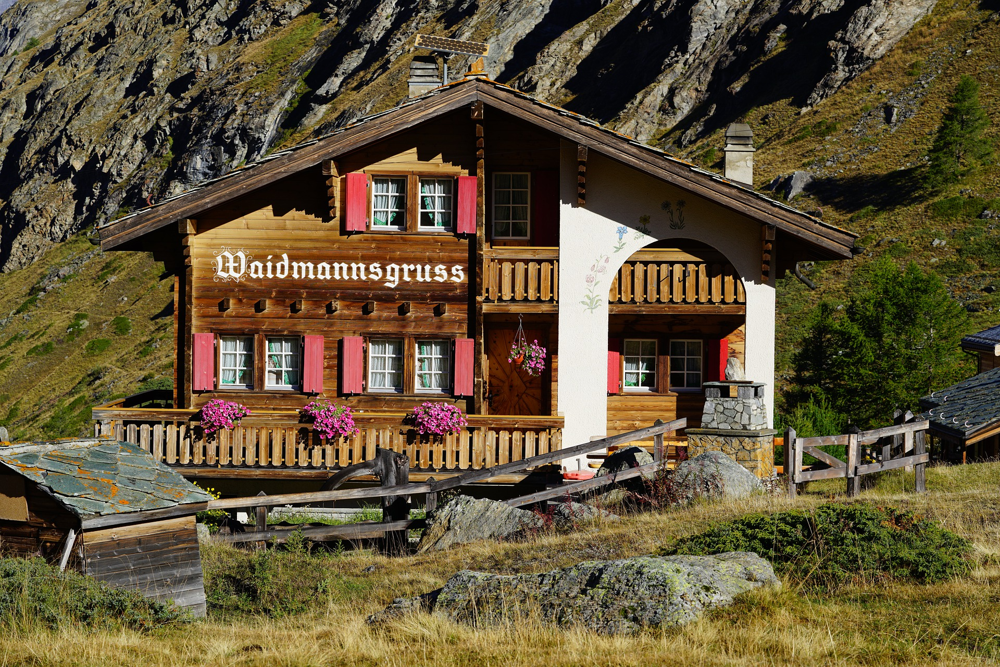
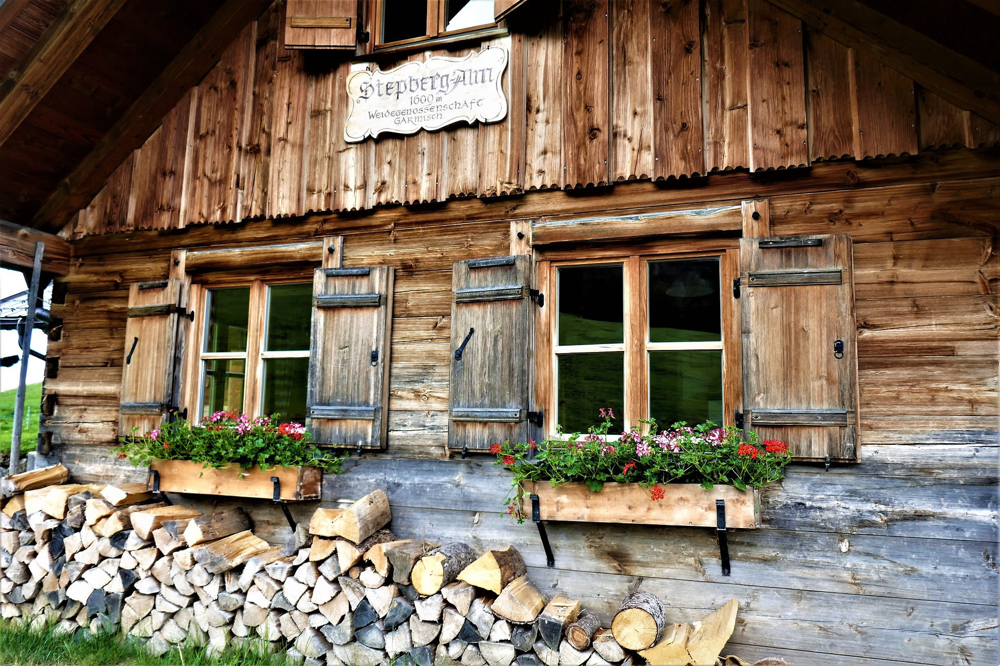
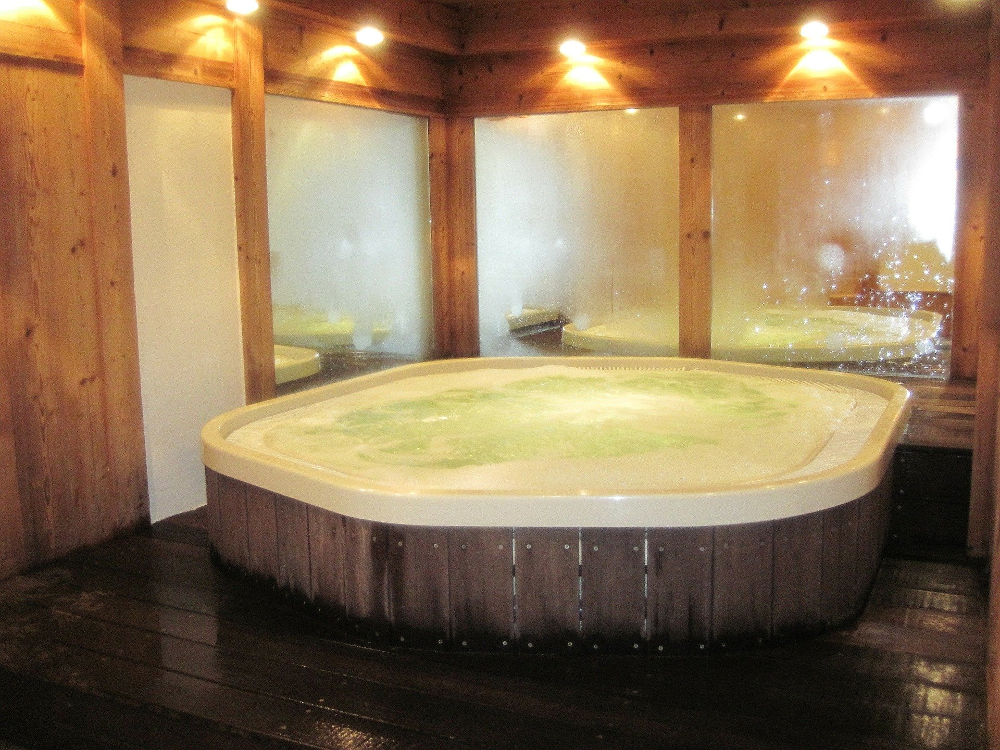
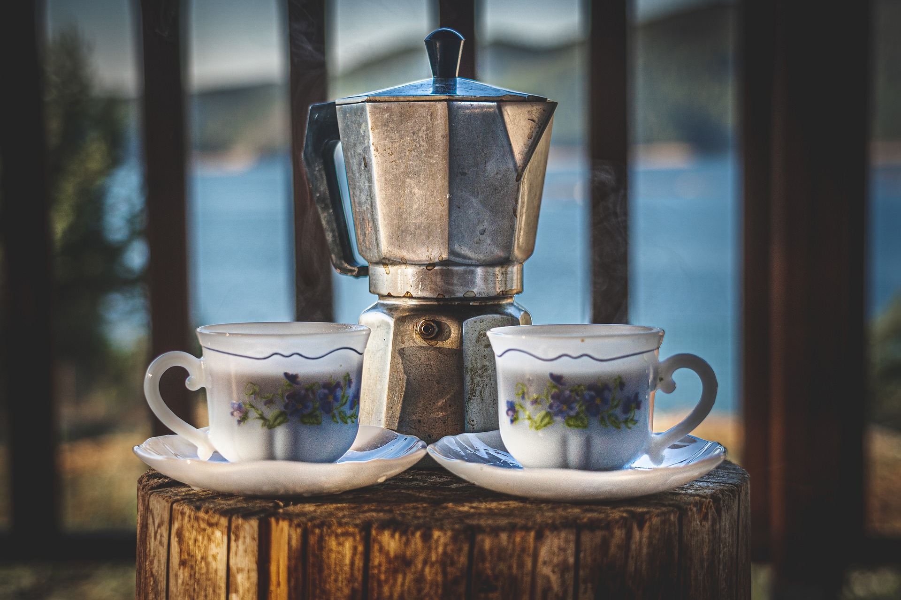

<!DOCTYPE html>
<html lang="ja">

<head>
    <meta charset="UTF-8">
    <meta name="viewport" content="width=device-width, initial-scale=1.0">
    <title>夏乃温泉山荘</title>
</head>
<link rel="stylesheet" href="style.css">

<body>
    <header class="header">
        <div class="content-wrapper header-nav">
            <h1>夏乃温泉山荘</h1>
            <nav>
                <ul>
                    <li><a href="index.html">ホーム</a></li>
                    <li><a href="#meibutu">当小屋の名物</a></li>
                    <li><a href="price.html">ご利用料金</a></li>
                    <li><a href="map.html">アクセス</a></li>
                    <li><a href="contact.html">お問い合わせ</a></li>
                </ul>
            </nav>

        </div>
    </header>
    <section class="mainvisual">
        
        <h2>京の山小屋</h2>
        <div class="bg1"></div>
    </section>
    <main>
        <section class="greeting">
            <div class="content-wrapper">
                <div class="contents">
                    <figure></figure>
                    <div class="content">
                        <h2>夏乃温泉山荘のご紹介</h2>
                        <p>京都大比叡から鞍馬に至る京都北山トレイルの中腹に位置する夏乃温泉山荘は平成9年に建てられその小屋の歴史はとても長きに渡り多くの登山客に愛されています。また当小屋名物の温泉は鞍馬からの源泉であり登山で疲れた体を癒やす事にとても多くの評判を頂いております。
                        </p>
                    </div>
                </div>
            </div>
        </section>
        <section class="work">
            <div class="content-wrapper">
                <a name="meibutu">
                    <h2>当小屋の名物</h2>
                </a>
                <ul>
                    <li>
                        <a href="#">
                            <figure></figure>
                            <h3>夜景</h3>
                            <p>当小屋北西からは美しい大原の街を見渡す事ができます。</p>
                        </a>
                    </li>
                    <li>
                        <a href="#">
                            <figure></figure>
                            <h3>温泉</h3>
                            <p>一年中ご利用可能な当小屋の温泉は鞍馬からの源泉であり、ご宿泊のお客様だけでなく日帰りでのお客様にもご利用頂けます。</p>
                        </a>
                    </li>
                    <li>
                        <a href="#">
                            <figure></figure>
                            <h3>カフェ</h3>
                            <p>京都北山産の自家製の豆を焙煎、販売しておりレギュラーコーヒー、カフェラテ、エスプレッソをご提供しております。夏季の間は期間限定でコーヒーゼリー牛乳などもご用意しております。
                            </p>
                        </a>
                    </li>
                </ul>
            </div>
        </section>
        <!-- <section class="news">
            <div class="content-wrapper">
            </div>
        </section> -->
        <!-- <section class="recruit">
        </section> -->
    </main>
    <footer class="footer">
        <div class="content-wrapper">
            <div class="address">
                <h2>夏乃温泉山荘</h2>
                <p>〒000-0000 <br>
                    京都府京都市左京区八瀬花尻町<br>
                    TEL 01-2345-6789 <br>
                    FAX 01-2345-6789
                </p>
            </div>
            <ul>
                <li><a href="index.html">ホーム</a></li>
                <li><a href="#meibutu">当小屋の名物</a></li>
                <li><a href="price.html">ご利用料金</a></li>
                <li><a href="map.html">アクセス</a></li>
                <li><a href="contact.html">お問い合わせ</a></li>
            </ul>
        </div>
        <div class="copylight">
            <small>&copy; 2020 夏乃温泉山荘</small>
        </div>

    </footer>
</body>

</html>